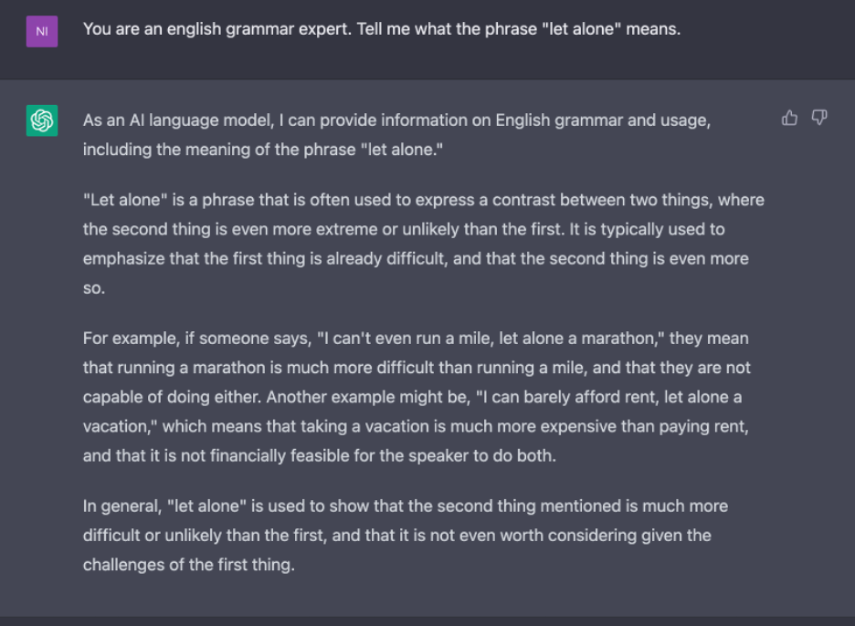
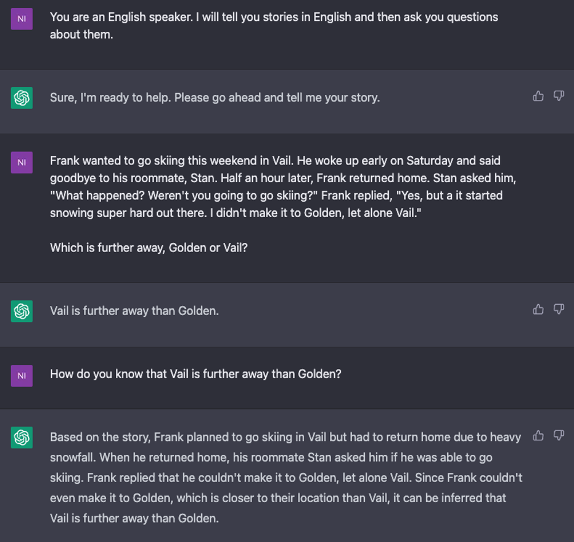
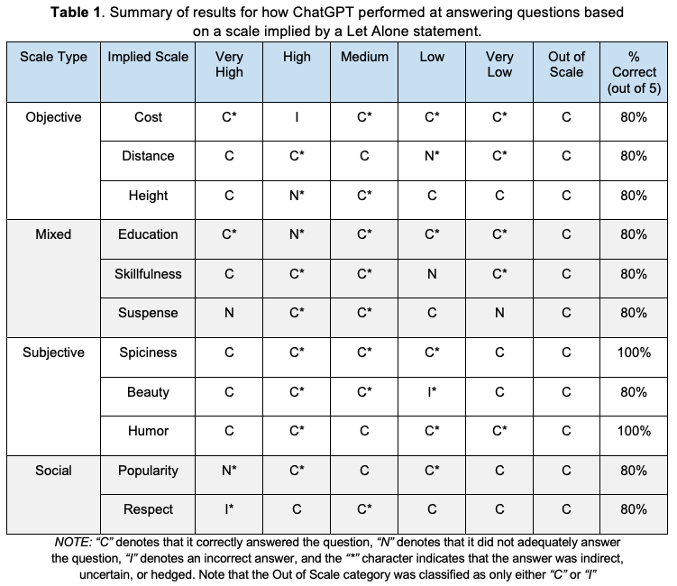

While generative language models have been a topic of research for decades, it has only been recent that they have stepped fully into the spotlight. These models require an extraordinarily large amount of data and computational power to train. Since the early 2010’s, advancements in GPU hardware, the availability of large datasets thanks to the explosion of the internet, and advancements in deep learning techniques, such as the transformer architecture, have in tandem made possible the modern version of large language models, the most famous of which is ChatGPT (built on top of GPT-3).
Much hullabaloo has been made over the capabilities of ChatGPT. There are legitimate concerns over its ability to mass produce misinformation, to violate privacy and intellectual rights, to replace the jobs of an untold number of skilled workers, and even to undermine the foundation of our educational system. However, at its core, it is nothing more than a predictive model, where after being given a prompt it makes a series of predictions for the most likely next word in a sentence. What makes ChatGPT so special is that despite this simple underlying principle of execution, it can generate coherent text that can convincingly pass as being written by a human being.
The impressive accuracy and fluency of ChatGPT (and lack of transparency on the part of its creators) has set off a wave of research interests in probing the model to gain insight into what it does and does not “know.” At a technical level, we know that it was trained using a semi-supervised training algorithm, and we know that it can process long-range grammatical dependencies thanks to its transformer architecture, but those are details as to how it was made. These details do not describe the sort of tasks it can perform with its vast array of floating point representations of the English language sitting underneath the hood. ChatGPT can clearly handle straightforward language tasks, such as drafting an email or spinning a bedtime story, but how well can it manage more subtle aspects of language?
Idioms are an interesting topic of investigation for probing ChatGPT, as they comprise a unique aspect of language that requires not just an understanding of the individual words, but also an understanding of the cultural context in which the idiom is used. Further, they often have meanings that cannot be inferred from the literal meaning of each individual word. Stated more formally by Fillmore:
“We think of a locution or manner of speaking as idiomatic if it is assigned an interpretation by the speech community but if somebody who merely knew the grammar and the vocabulary of the language could not, by virtue of that knowledge alone, know (i) how to say it, or (ii) what it means, or (iii) whether it is a conventional thing to say. Put differently, an idiomatic expression or construction is something a language user could fail to know while knowing everything else in the language. [1]“
Let alone is considered to be a formal idiom, that is, it is a syntactic pattern dedicated to semantic and pragmatic purposes not knowable from its form alone [1]. The let alone construction can be considered as a coordinating conjunction, each of whose conjuncts contains a focused element [1]. The syntactic structure of the let alone structure is demonstrated below:
a. \(F (X\) \(A\) \(Y\) let alone \(B)\)
‘I doubt you could get FRED to eat squid, let alone LOUISE.’
b. \(F (X\) \(A\) let alone \(B\) \(Y)\)
‘I doubt you could get FRED, let alone LOUISE, to eat squid.’
In order for the construction to be interpretable, its constituents must fall within a scaler model, where the two propositions joined by let alone must lay along the same implied semantic scale. The second essential step in the interpretation of a let alone sentence requires that the A proposition and the B proposition are distinct points along that scale. Note that the scale can also be multidimensional. Summed up by Fillmore:
“The whole let alone sentence has a meaning that can be represented as follows: stronger proposition a fortiori weaker proposition. That is, whatever reason we have to believe, state, impere, suggest, etc., the stronger proposition, we have even stronger reason to so express the weaker proposition. [1]”
In this report, I will detail my findings on probing ChatGPT for its understanding of the ‘let alone’ construction. Of particular interest during this investigation are the following questions. RQ1: Can ChatGPT infer an accurate semantic scale from a given let alone statement? RQ2: How accurately can ChatGPT answer questions that require a reference to the implied scale from a let alone statement? RQ3: Are certain kinds of scales more or less difficult for ChatGPT to interpret than others?
To get started, I just came out and asked ChatGPT what the phrase ‘let alone’ means, and here was its response:

We can see from this that while ChatGPT does not offer a formal description of let alone (like the one above provided by Fillmore), it provides a description of the phrase that is functionally accurate. Note that it does not explicitly mention anything about implied scales, but it offers two scales where let alone can be used: likelihood and difficulty.
I next asked ChatGPT to complete a story after I provided a starting point. I then asked follow-up questions to see if it understood the scale that was implied from the let alone statement.

It passes this initial test with flying colors, not only successfully inferring the scale, but even providing an accurate explanation of how it derived the scale from the sentence in the story that used let alone. I then tried to trick ChatGPT by asking which had a larger population: Golden or Vail? However, it did not fall for my question that would have depended on information from outside the implied scale.
For the final test during the initial probing stage, I provided a story about a woman traveling through Europe that implied a direction of travel from East to West.
While ChatGPT recognizes that Warsaw is east of Berlin, it does not successfully interpret that information in the context of the story to deduce that Meg must have been traveling eastward. In fact, it infers that she must have been traveling westward!
I provided a second story where Nick was traveling home for the holidays, and again ChatGPT struggled to infer the direction of travel from the let alone statement.
From the initial probing, it’s clear that ChatGPT can infer scales from a let alone statement, but it doesn’t always do so perfectly, particularly when inferring direction from a scale that is grounded in geographical locations in the world.
To further investigate ChatGPT’s capability of inferring a scale from a let alone statement, I implied several distinct scales and then asked ChatGPT questions that referred to different points along the scale as well as one question that fell outside the scale entirely.
Prompt: “I will tell you a short story, then I will ask you questions about it. Jesse can’t afford a bicycle, let alone a car.”
Q: Can Jesse afford a plane? [Much more]
A: Based on the information provided in the story, we don’t have any indication that Jesse can afford a plane. It only mentions that he can’t afford a bicycle or a car.
Q: A motorcycle? [More]
A: It’s unclear from the story whether Jesse can afford a motorcycle or not. All we know is that he can’t afford a bicycle or a car.
Q: A new suit? [About the same]
A: The story doesn’t provide any information about Jesse’s financial situation beyond the fact that he can’t afford a bicycle or a car. So, we don’t know if Jesse can afford a new suit or not.
Q: A skateboard? [Less]
A: It’s possible that Jesse could afford a skateboard, but we can’t say for certain based on the information provided in the story. The story only tells us that he can’t afford a bicycle or a car, so we don’t have enough information to make any assumptions about his ability to buy a skateboard.
Q: A cup of coffee? [Much less]
A: It’s possible that Jesse could afford a cup of coffee, but we can’t say for certain based on the information provided in the story. The story only tells us that he can’t afford a bicycle or a car, so we don’t have enough information to make any assumptions about his ability to buy a cup of coffee.
Q: To miss this chance? [Out of scale]
A: I’m sorry, but I don’t have enough information about what chance Jesse might have, or what missing it could entail. Without more context, it’s difficult to say whether he can afford to miss the chance or not.
As you can see from the above example, ChatGPT answers the questions in a way that doesn’t totally violate the scale, but it consistently conveys uncertainty or hedges its answer to the point of ambiguity. In this example, it correctly answers that Jesse cannot afford a plane, that it’s unclear whether he can afford a new suit, and that it is possible he can afford a skateboard and a cup of coffee. However, a motorcycle is certainly more expensive than a bicycle (on average), so we would say that it answered that question incorrectly. Finally, it correctly identified the last question (“to miss this chance”) as being out of the implied scale. I repeated this process 10 more times using different kinds of scales. The results can be found in Table 1. Details of the prompts can be found here.

From these results we see that ChatGPT correctly answers questions related to the implied scale at least 80% of the time for each scale, regardless of scale type. However, its answers are either indirect, uncertain, or hedged for a majority of its responses. I should note here that it was difficult to evaluate the “correctness” of a reply, as they were often so overly verbose and/or hedged that it became hard to discern whether it had even answered the question at all. An interesting direction for future work would be to develop a more concrete method of implying a scale and evaluating the correctness of answers generated by ChatGPT.
One interesting question that can be asked about an implied scale is the following: If A is unsuitable for category X and even less suitable for category Y, but A must be placed in either X or Y, which should A be placed in? Answering this question requires not only placing X and Y at distinct points on a semantic scale, but also determining that A should be closer to X than Y. Below is an example of a Forced Choice prompt:
Prompt: Jeff is a businessman visiting Louisiana. He needs to cross a river to meet an important client. He asks a local fisherman how he can get across the river. The fisherman replies that there are only two ways to cross: by boat or by helicopter. Jeff is shocked, and then says “I’m too afraid to travel by boat, let alone a helicopter!”
Q: Which option do you expect Jeff will choose? [Expectation]
A: It’s difficult to say which option Jeff will choose since the story doesn’t provide enough information about his preferences or constraints. However, if Jeff is truly too afraid to travel by both boat and helicopter, he may have to explore other options such as driving or rescheduling the meeting. Alternatively, he may be willing to try a boat ride if he can find a trusted and experienced operator who can reassure him and help him feel more comfortable. Ultimately, it’s up to Jeff to decide which option works best for him given his situation and limitations.
Q: If Jeff absolutely must cross the river, which option will he take? [Forced choice]
A: : If Jeff absolutely must cross the river, he may have to face his fear and choose one of the available options. It’s difficult to determine which one he will choose without more information about his priorities and concerns. However, if Jeff’s fear of traveling by boat is too great, he may choose to take the helicopter instead. On the other hand, if he feels more comfortable with boats than helicopters, he may choose to take that option despite his initial reluctance. Ultimately, his decision will depend on a variety of factors, including his level of fear, the urgency of the meeting, and the availability and cost of transportation options.
Q: Which is scarier to Jeff, traveling by boat or by helicopter? [Scale]
A: : Based on Jeff’s statement, “I’m too afraid to travel by boat, let alone a helicopter!”, it seems that he considers traveling by boat to be scary and traveling by helicopter to be even scarier. However, without additional context, it’s difficult to determine the exact extent of his fear for each mode of transportation.
From the responses of ChatGPT to the follow-up questions, we see a familiar pattern emerging: answering indirectly with hedging and uncertainty. This pattern is becoming so common that it makes one think that the ChatGPT API might have a protocol to ensure that it doesn’t answer questions like these too confidently. We also notice that it doesn’t quite successfully answer the forced choice in the ideal way. The first question, which is what it expects Jeff will choose, mentions that he may try the boat and does not mention the helicopter, which is an indirect way of affirming the scale. The second question, which is the forced choice, goes completely unanswered altogether. The answer is so non committal that it might as well not have answered at all. However, when we roll it back to asking it directly about the implied scale, it successfully answers the question. See here for other forced choice prompts.
Another potential task for ChatGPT is not for it to infer an implied scale from a let alone statement, but to ask it to complete a let alone statement instead. This requires that from a single point it infer a semantic scale by generating a suitable second point along that scale. Below are several examples where it attempted to complete a let alone statement. It completed all prompts without issue with the exception of prompt 4 (social scale), for which it made an incorrect guess that was along the same scale.
There is also the question of symmetry with respect to the let alone statement, as demonstrated in the example provided by Fillmore shown below:
Example:
You couldn’t get a poor man to wash your car for $2 in the summertime, let alone a rich man to wash your truck for $1 in the winter.
Note the parallel construction of this ‘let alone’ phrase, where a multidimensional scale is mirrored on either side (poor man/rich man, car/truck, $2/$1, summertime/winter). I gave this sentence to ChatGPT up to and including the let alone statement and asked it to complete the sentence.
Prompt: You couldn’t get a poor man to wash your car for $2 in the summertime, let alone ___.
Response 1: You couldn’t get a poor man to wash your car for $2 in the summertime, let alone in the dead of winter when it’s freezing cold.
Response 2: You couldn’t get a poor man to wash your car for $2, let alone a wealthy man who wouldn’t bother with such a low price.
While technically not a failure on the part of ChatGPT, it did not make any attempt to reflect each scale presented in the first half of the let alone statement. However, when we correct for this by offering multiple blanks for ChatGPT to fill in, performance noticeably improves.
Prompt: You couldn’t get a poor man to wash your car for $2 in the summertime, let alone __ to __ for __ in the __.
Response: You couldn’t get a poor man to wash your car for $2 in the summertime, let alone convince a wealthy businessman to work for minimum wage in the fast-food industry, for eight hours a day in the winter .
Note that symmetry is achieved for “poor man” / “wealthy businessman” and “summer” / “winter”, but the symmetry between “wash your car” / “work for minimum wage in the fast-food industry” is questionable, and “2$” and “eight hours a day” are not on the same scale. We can also reverse the blanks where the second half of the let alone statement is complete while the first remains unclear. ChatGPT performs well here too.
Prompt: I’m too afraid to __ at __ on the ___, let alone drive a sports car at 150mph on the highway!
Response: I’m too afraid to ride a bicycle at night on the street, let alone drive a sports car at 150mph on the highway!
When we leave both sides of the let alone statement blank, ChatGPT does not know what to do and asks for more context. When more context is provided, it successfully fills in the blanks in a grammatically correct way.
Prompt: She is __ to __, let alone __ at ___.
Response: I’ll need more context to provide a more accurate completion for the sentence. Could you please provide more information or clarify the sentence?
Additional Context: Yes the context is that she is not very hungry.
Response: “She is too full to finish her plate, let alone order dessert at the restaurant.”
A final direction of investigation for probing ChatGPT’s understanding of the let alone construction is ‘progressive prompting.’ That is, it was provided with an initial fill-in-the-blank question where a first point on a scale was provided and it would generate a suitable second point, as described in section 8. When it would complete the scale, its answer was taken and used to replace the first point with the second point that it generated and then ask it to fill in the blank again, repeating this process many times. This technique allows us to see how far down the scale ChatGPT can go before it can no longer generate suitable responses to complete a given scale. Below is an example of progressive prompting where ChatGPT is asked about a scale related to beauty.
| Iteration | ChatGPT Answer |
|---|---|
| 0 | The painting isn’t beautiful enough to hang in a cheap motel, let alone ___ |
| 1 | The painting isn’t beautiful enough to hang in a cheap motel, let alone be displayed in a prestigious art gallery. |
| 2 | The painting isn’t beautiful enough to be displayed in a prestigious art gallery, let alone be recognized as a masterpiece by art critics and historians. |
| 3 | The painting isn’t beautiful enough to be recognized as a masterpiece by art critics and historians, let alone become an iconic symbol of a particular art movement or era. |
| 4 | The painting isn’t beautiful enough to become an iconic symbol of a particular art movement or era, let alone be considered as a national treasure or be displayed in a museum alongside some of the most famous works of art in history. |
| 5 | The painting isn’t beautiful enough to be considered as a national treasure or be displayed in a museum alongside some of the most famous works of art in history, let alone be auctioned for millions of dollars at a prestigious art auction |
| 6 | [BROKEN] The painting isn’t beautiful enough to be auctioned for millions of dollars at a prestigious art auction, let alone The painting isn’t beautiful enough to be included in the private collection of a wealthy art collector or museum, let alone |
In this example ChatGPT generates five successful completions of the let alone construction before breaking (although an argument could be made that the scale is violated at prompt #4 or #5). Below is another example, but this one uses the objective scale of cost.
| Iteration | ChatGPT Answer |
|---|---|
| 0 | I’m too broke to afford a pack of gum, let alone ___. |
| 1 | I’m too broke to afford a pack of gum, let alone a fancy dinner at a restaurant. |
| 2 | I’m too broke to afford a fancy dinner at a restaurant, let alone stay at a luxury hotel on vacation. |
| 3 | I’m too broke to stay at a luxury hotel on vacation, let alone book a private yacht for a day. |
| 4 | I’m too broke to book a private yacht for a day, let alone purchase a waterfront property. |
| 5 | I’m too broke to purchase waterfront property, let alone invest in a high-end real estate development project. |
| 6 | I’m too broke to invest in a high-end real estate development project, let alone start my own business. |
| 7 | I’m too broke to start my own business, let alone hire employees and rent a commercial space. |
| 8 | I’m too broke to hire employees and rent a commercial space, let alone expand my business globally. |
| 9 | I’m too broke to expand my business globally, let alone acquire a competitor company. |
| 10 | I’m too broke to acquire a competitor company, let alone invest in research and development of new products or technologies. |
| 11 | I’m too broke to invest in research and development of new products or technologies, let alone to establish a new research institute or start a tech company from scratch. |
| 12 | I’m too broke to establish a new research institute or start a tech company from scratch, let alone hire a team of talented researchers and engineers to help bring my ideas to life. |
This progressive prompting exercise does not end in a broken response, but rather it violates the scale through ambiguity. Consider the response generated from prompt #6, which implies that it is more expensive to start a business than it is to invest in a high-end real estate development project. While that may be true for some businesses, it is certainly not true of all businesses. This ambiguity of cost lets ChatGPT generate responses that ostensibly fulfill the criteria for a proper let alone statement. See here for other examples of progressive prompting.
There are several notable limitations of the independent study work I did while probing ChatGPT for its understanding of the let alone construction. First, interpreting the “success” of whether or not ChatGPT correctly completes a prompt can be difficult. Many of its answers were so ambiguous, indirect, or hedged, that it was difficult to even determine whether it had answered anything at all. It would be useful to develop more concrete metrics to determine success. A second limitation was a lack of a framework for delivering different implied scales in a consistent manner. Similarly, it is difficult to determine a suitable set of questions that can be given to ChatGPT about implied scales in such a way as to measure its success at inferring the scale. Future work is needed in both of these areas to determine the best way for further probing. A final limitation is the lack of transparency on the behalf of ChatGPT’s creators as to the amount of hard-coded logic that has been “bolted onto” the model to prevent it from generating undesirable speech. I suspect that the high rate of hedging and indirect answers is a result of this, but it is impossible to say without inside knowledge.
While ChatGPT did not perform perfectly in every probing exercise, it did demonstrate an impressive “understanding” of the let alone construction. Not only did it successfully infer a variety of scales related from the objective (cost, height) to the subjective (beauty, humor), but it also could generate those same scales when provided with only a single point. Further, when asked questions about the implied scale, it correctly answered those questions (albeit with a fair amount of hedging) over 80% of the time for a variety of 11 different scales. We also found from our fill in the blank prompting that ChatGPT could successfully capture the multidimensional symmetry of a let alone constructed if provided with the correct number of blanks on either side of the let alone phrase. However, it did struggle with inferring directions of travel from implied geographical scales. It would be interesting to dig further into this particular area of struggle for ChatGPT, as it could be that inferring direction of travel from a geographical scale is a less common thing to discuss in everyday life, leading to a lack of training data, and consequently, a lack of predictive power in the underlying model to generate suitable responses.
[1] Fillmore, C. J., Kay, P., & O’Connor, M. C. (1988). Regularity and Idiomaticity in Grammatical Constructions: The Case of Let Alone. Language, 64(3), 501–538. https://doi.org/10.2307/414531